לילה · כל האתר
כל השלבים בוצעו. באמצע דרגה 3, עם רצף והתקדמות אמיתיים.
מסך הבית
מתנגן עכשיו, הבא בתור, והספרייה של עשר הדרגות.
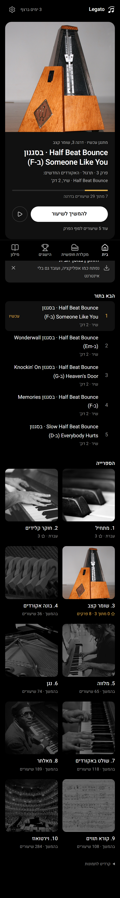
מצבים של מסך הבית
באמצע דרגה · דרגה שנגמרה ומחכה למבחן · חשבון חדש.
שיעור ושיר
כותרת עם עטיפת הדרגה · עצירה קטנה · שיר · סוף שיעור.
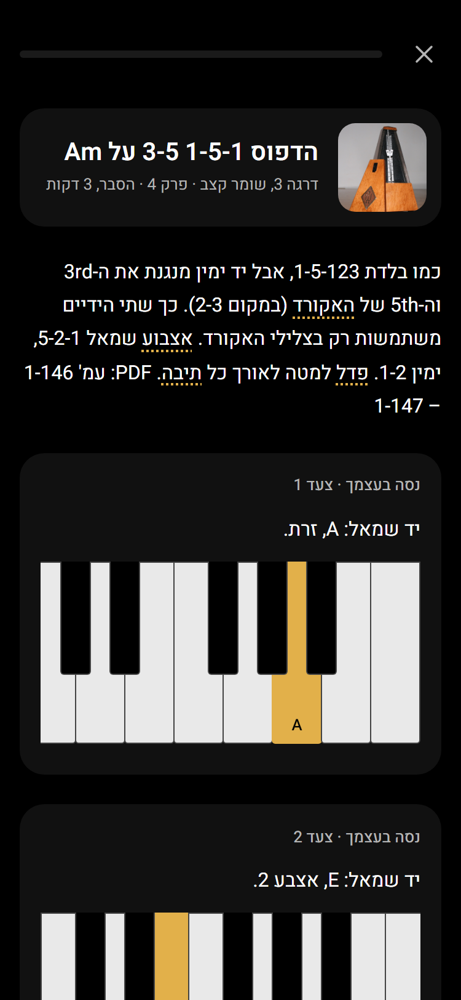
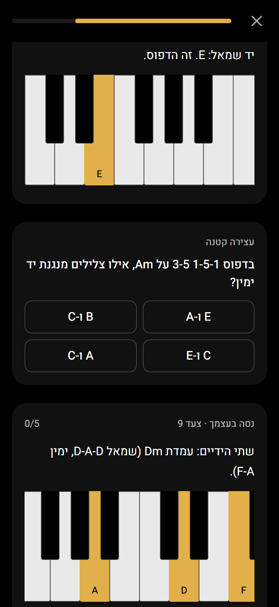
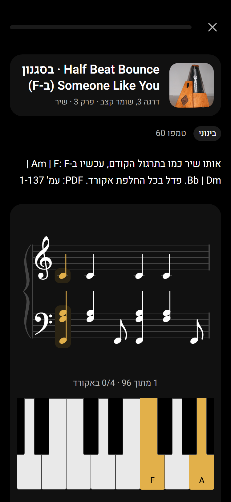
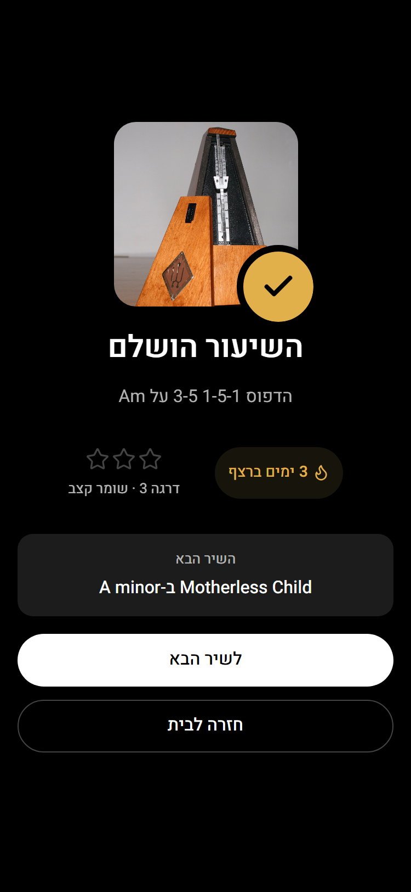
מבחן ועליית דרגה
פתיחת המבחן כמו עמוד של אלבום · שאלה · עליית דרגה.
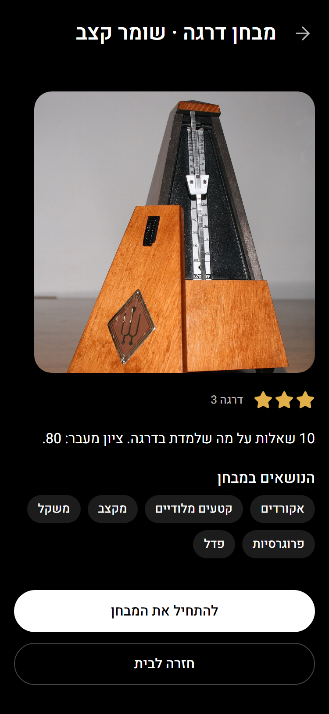
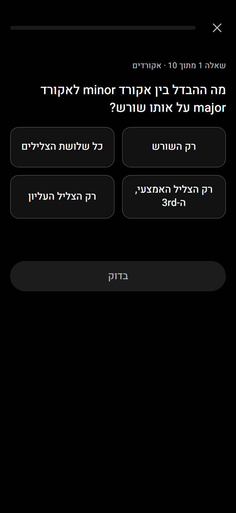
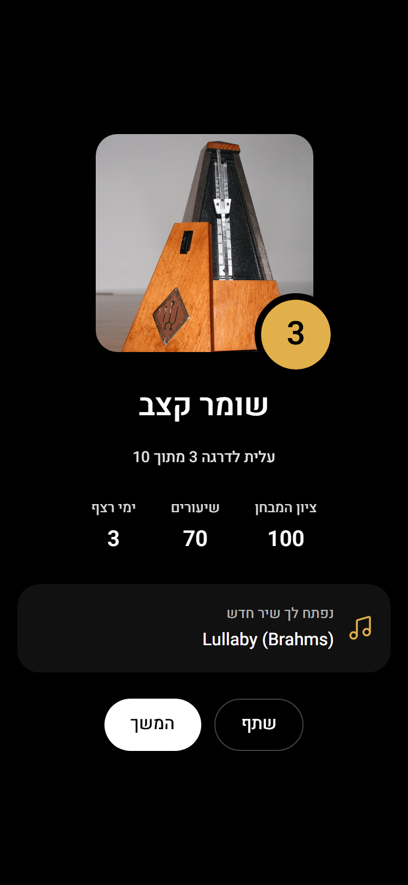
שאר המסכים
הישגים · מילון · מקלדת חופשית · הגדרות.
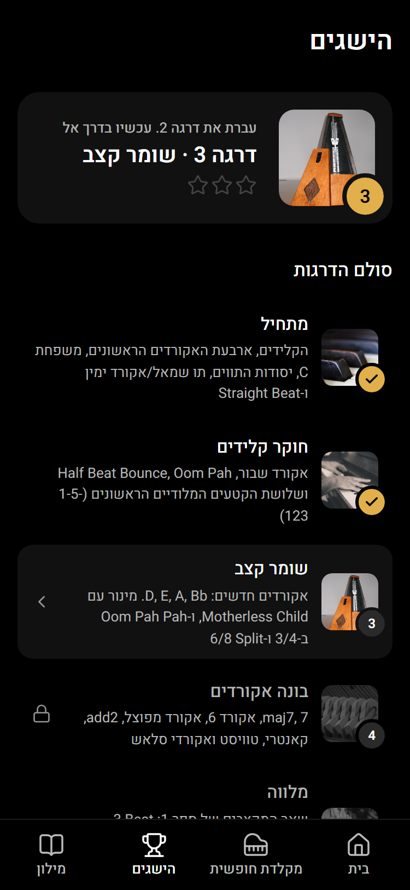
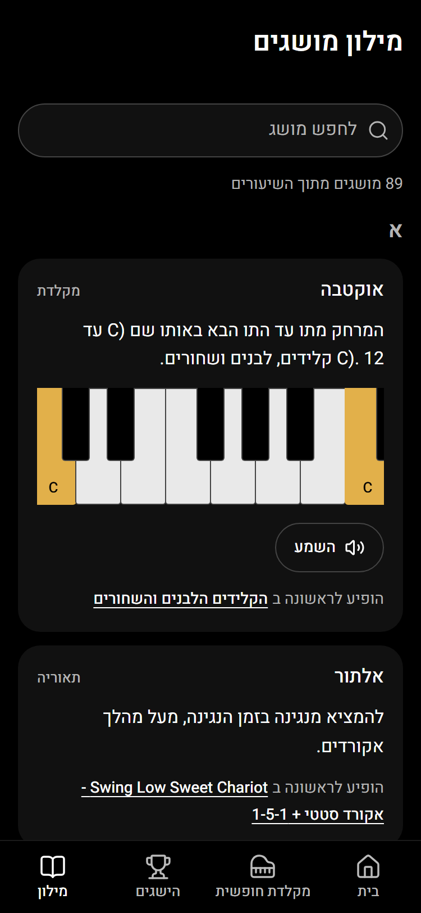
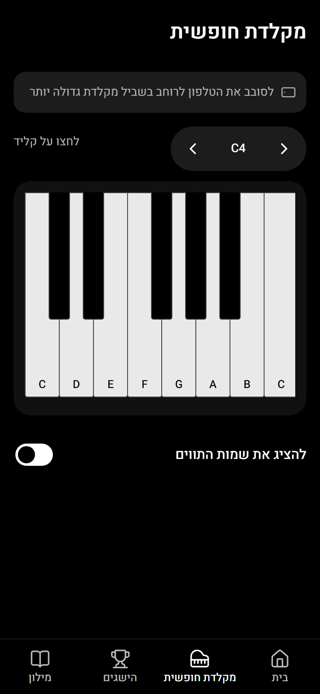
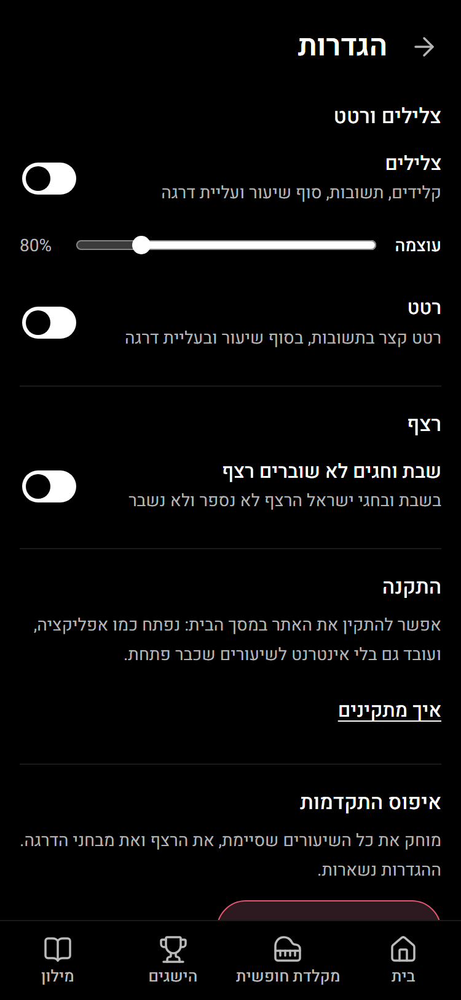
במחשב
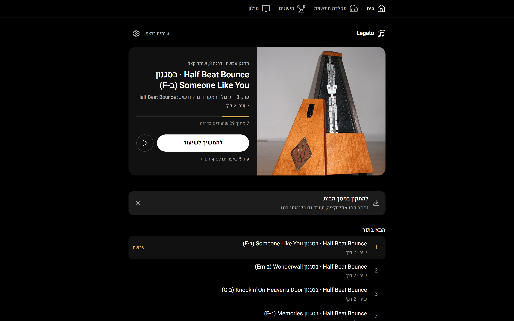